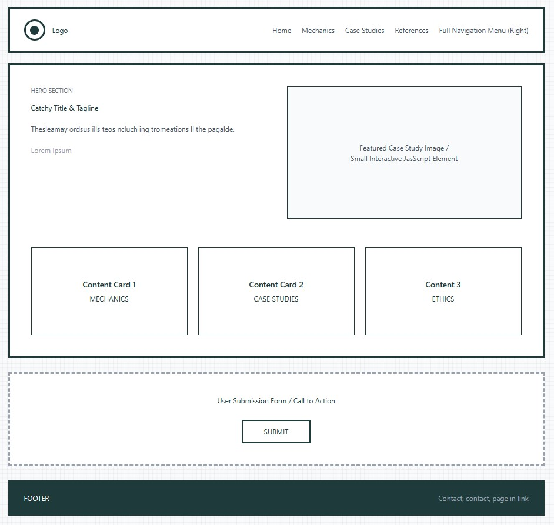

Site Name
Site Name: The Gamification Lab
Logo Idea: A minimalist icon of a "progress bar" filling up, perhaps with a brain or gear inside.
Reasoning: The name is professional yet intriguing. "Gamification" directly states the subject, and "Lab" suggests a scientific, analytical approach to research and demystification, fitting the site's purpose of exploring the psychology behind design.
Optional Domain Suggestion: game-lab.org or gamification-lab.com
Site Purpose
The site serves as an educational and analytical hub focused on the application of game design elements in non-game contexts. It provides clear definitions, breakdowns of psychological principles (like intrinsic vs. extrinsic motivation), and real-world case studies of successful and ethical gamification.
Services/Information Provided:
- In-depth articles explaining key psychological mechanics (e.g., Loss Aversion, Variable Rewards).
- Case studies analyzing popular apps (Duolingo, fitness trackers, etc.).
- An HTML Form for users to submit their own gamification examples or questions for review.
- Ethical guidelines for responsible motivational design.
The overall goal is to demystify how these systems work so users can understand and control their own engagement.
Scenarios (Target Audience Questions)
The target audience includes students, designers, and general users curious about technology and motivation.
Scenario 1: Student/Aspiring Designer
- Question: "What is the difference between intrinsic and extrinsic motivation, and how do I use a progress bar effectively in my own app design?"
- Content Drive: This requires a detailed page on Motivation Theory and a page on Mechanics explaining the Zeigarnik Effect (the tendency to complete an unfinished task).
Scenario 2: General User/Curious Consumer
- Question: "Why do I feel so stressed about losing my 'streak' on this app? Is that bad design, and how can I turn off those notifications?"
- Content Drive: This requires a section on Ethics and Dark Patterns (Loss Aversion) and a page analyzing specific popular app mechanics, offering insight and control.
Color Schema
The chosen colors aim for a professional, analytical, and engaging feel, suggesting both trust (Teals) and action/importance (Coral).
Primary Color: Dark Teal (`#264653`)
- Usage: Main Headings (H1), Navigation Bar Background, Footer Background.
Secondary Color: Off-White (`#F7EDE2`)
- Usage: Main Page Background, Large Text Blocks (provides warmth instead of stark white).
Accent 1 Color: Coral/Orange (`#E76F51`)
- Usage: Call-to-Action Buttons (e.g., "Submit Form"), Active Navigation Links, Important Accents.
Accent 2 Color: Medium Teal (`#2A9D8F`)
- Usage: Subheadings (H2, H3), Section Dividers, Data Visualization Elements.
Text Color: Near Black (`#1A1A1A`)
- Usage: Body Paragraphs (ensures high contrast and accessibility).
Typography
One primary font is used for simplicity, readability, and modern appeal. A secondary mono-spaced font is reserved for technical clarity.
Primary Font: Poppins (Sans-Serif)
- Usage: All Headings (H1, H2, H3) and Body Text. This font is clean, modern, and highly legible across all screen sizes.
- Example (Heading): The Science of Streaks
- Example (Body): Gamification uses external rewards to influence behavior.
Secondary Font: Roboto Mono (Monospace)
- Usage: Reserved for code snippets, citation text, and any technical information displayed on the site to provide a clear visual separation from standard text.
- Example (Code): if (points > 1000) { levelUp(); }
Wireframe: Home Page Layout
The home page will focus on clearly presenting the site's purpose and immediately guiding the user to the core content (Mechanics, Case Studies).
Wide Screens (Desktop)

Mobile Screens

Site Pages
The site will include the following three pages with a common navigation:
- index.html (Home): Introduction, featured content cards, and the main call-to-action (Form).
- mechanics.html: Detailed articles on core psychological concepts (Intrinsic vs. Extrinsic, Loss Aversion, Variable Rewards) with visual examples.
- case-studies.html: Analysis of 4-6 real-world gamified applications, explaining the techniques and ethical impact of each.
- references.html: Citations for all images and verbiage referenced from external sources that is linked in footer.